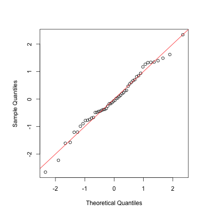
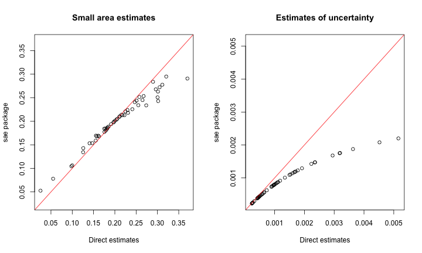
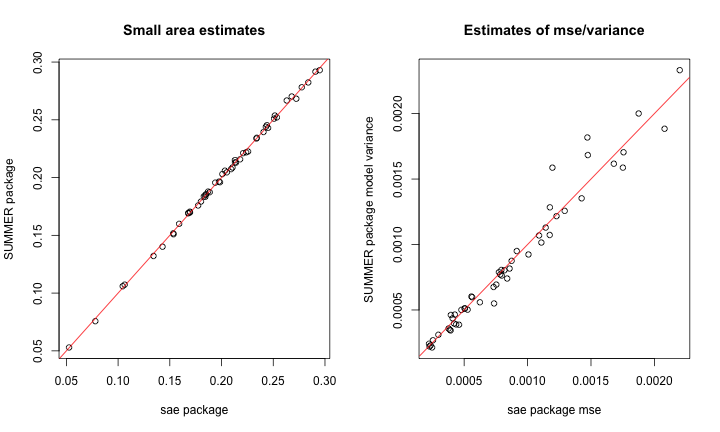
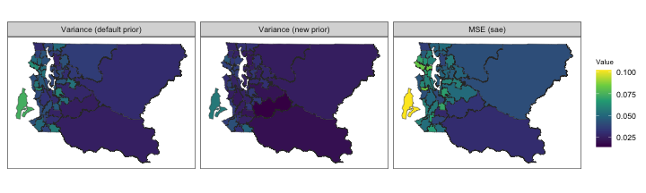
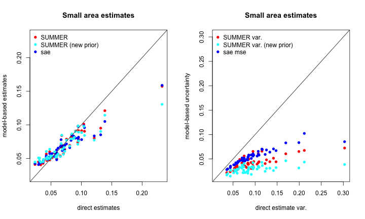
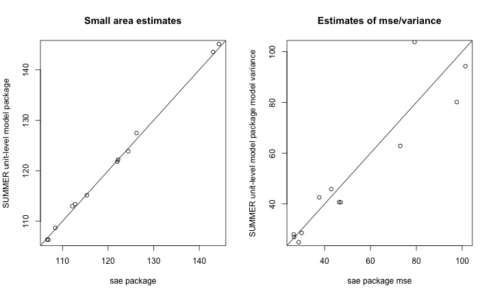

Generic small area estimation
Peter Gao and Jon Wakefield
2024-02-29
Source:vignettes/articles/web_only/small-area-estimation.Rmd
small-area-estimation.RmdIn this vignette, we illustrate the use of the
smoothArea and smoothUnit functions for
generic small area estimation of outcomes other than under-five
mortality rates. Using example data presented in the sae
vignette, we compare our results from SUMMER with those
obtained using the sae package (for a survey of other
packages for small area estimation, see Kreutzmann et al. (2019)).
Preliminary
First, we load the necessary packages and data. The required package
INLA is not available via a standard repository, so we
include code for installation if it is not found. The
survey package will be used to generate direct estimates,
while dplyr and tidyr will be used for data
manipulation.
Area level models
Artificial poverty rate example
In their vignette for the sae package, Molina and Marhuenda (2015) generate an
artificial dataset on income and other related variables to illustrate
the use of area level models. In this example, the objective is to
estimate prevalence of poverty in Spanish counties.
data("incomedata")
data("sizeprov")
data("sizeprovedu")
povertyline <- 0.6 * median(incomedata$income) # 6557.143
incomedata$in_poverty <- as.integer(incomedata$income < povertyline)The incomedata data frame contains information on 17199
observations of individuals in 52 Spanish provinces. Income values and
sampling weights are provided for each individual along with covariate
information including age group and education level. Molina and Marhuenda (2015) define the poverty
line and calculate an indicator variable (which we name
in_poverty) with value 1 if the corresponding income value
is below the poverty line and 0 otherwise.
Direct estimation with sae
Before considering model-based methods for small area estimation, we
compute direct weighted estimators for the desired small area means. The
sae::direct function computes the Horvitz-Thompson
estimator of domain means given by
\[ \widehat{\overline{Y}}_{i}^{\text{DIR}}=\frac{1}{N_i}\sum_{j\in S_i}w_{j}y_{j} \]
where \(N_i\) is the population size
of domain \(i\), \(S_i\) is the set of sampled observations in
domain \(i\), \(w_{j}\) is the sampling weight for unit
\(j\), and \(y_{j}\) is the observation for unit \(j\), for all \(j
\in S_i\). The sae::direct function also estimates
standard deviation and coefficient of variation for each domain. Note
that \(N_i\) is assumed known and is
provided in the data frame sizeprov. The domains of
interest are identified via the provlab variable.
Direct estimation with survey
We can similarly use the survey::svyby function to
compute the Horvitz-Thompson estimates:
incomedata$pop <- sum(sizeprov$Nd[match(incomedata$provlab, sizeprov$provlab)])
design <- survey::svydesign(ids = ~1, weights = ~weight,
data = incomedata, fpc = ~pop)
# estimate area totals
svy.DIR <- survey::svyby(~in_poverty, ~provlab, design, svytotal)
# calculate corresponding area mean estimates
svy.DIR$prov_pop <- sizeprov$Nd[match(svy.DIR$provlab, sizeprov$provlab)]
svy.DIR$Domain <-svy.DIR$provlab
svy.DIR$Direct = svy.DIR$in_poverty/svy.DIR$prov_pop
svy.DIR$SD= svy.DIR$se/svy.DIR$prov_popBasic area level model
The basic area level model, also called the Fay-Herriot model, treats direct estimates of small area quantities as response data and explicitly models differences between areas using covariate information and random effects Fay and Herriot (1979). The Fay-Herriot model can be viewed as a two-stage model: in the first stage, a sampling model represents the sampling variability of a direct estimator and in the second stage, a linking model describes the between area differences in small area quantities.
Sampling model:
Let \(\widehat\theta^{\text{DIR}}_i\) be a direct estimator of an area level mean or total \(\theta_i\). The sampling model treats \(\widehat\theta^{\text{DIR}}_i\) as a noisy observation of the true finite population quantity \(\theta_i\):
\[ \widehat\theta^{\text{DIR}}_i=\theta_i+\epsilon_i;\hspace{2em}\epsilon_i\sim_{ind}N(0,V_i),\hspace{2em}i=1,\ldots, M \]
where \(V_i\) is the known sampling variance of the direct estimator \(\widehat{\theta}^{\text{DIR}}_i\).
Linking model:
\[ \theta_i = \textbf{x}_i^T\boldsymbol\beta+u_i,\hspace{2em}u_i\sim_{ind}N(0,\sigma_u^2)\hspace{2em}i=1,\ldots, M, \]
where \(\sigma_u^2\) (between-area residual variance) is estimated. In this basic Fay-Herriot model, the area-specific random effects \(u_i\) are assumed to be independent and identically distributed (IID) between areas.
Below, we provide a quantile-quantile plot comparing the direct estimates to a Gaussian distribution. Here the observed quantiles align well with those from a Gaussian distribution, which lends some support to the basic IID model.
par(pty = "s")
mu.DIR <- mean(sae.DIR$Direct)
sd.DIR <- sd(sae.DIR$Direct)
qqnorm((sae.DIR$Direct - mu.DIR) / sd.DIR, main = "")
abline(0, 1, col = "red")
Area level modeling with sae
As described by Molina and Marhuenda
(2015), the sae::mseFH function fits the basic area
level model (via REML by default) and calculates the empirical best
linear unbiased predictors (EBLUP) for all domain means as well as their
estimated MSEs.
sae.FH <- sae::mseFH(sae.DIR$Direct~1, sae.DIR$SD^2)
sae.FH.table <- data.frame(
Domain = sae.DIR$Domain,
EBLUP = sae.FH$est$eblup,
RMSE = sqrt(sae.FH$mse)
)
head(sae.FH.table)
## Domain EBLUP RMSE
## 1 Alava 0.23407448 0.03836098
## 2 Albacete 0.15335213 0.02744856
## 3 Alicante 0.20511853 0.02051886
## 4 Almeria 0.24498009 0.03427432
## 5 Avila 0.07797403 0.02372809
## 6 Badajoz 0.20928033 0.02186672Area level modeling with SUMMER
The SUMMER package adopts a Bayesian approach to
inference using models such as the basic area level model, carrying out
computation via the INLA package. The
smoothArea function computes direct estimates and then
produces smoothed estimates using a Bayesian Fay-Herriot model. The main
arguments of interest are:
-
formula: Describing the response variable and any area-level covariates -
domainA one-sided formula with the variable containing domain labels on the right. The domain labels variable should be contained in the dataset used to generate the design. -
design: Asurvey.designobject containing survey data and specifying the survey design.
In addition, other commonly used optional arguments include:
-
adj.mat: Optional adjacency matrix if a spatial smoothing model is desired. -
transform: If"logit"is specified, a logit transform will be applied to the direct estimates and an appropriate transformation will be applied to the estimated sampling variances before smoothing. -
direct.est: The direct estimates may be specified directly and smoothing will be applied directly to these user-provided estimates. -
X.domain: Data frame of area level covariates. -
domain.size: Data frame of domain sizes used for computing direct estimates if domain sizes are known.
Other optional arguments can be specified to change the priors and are described further in the documentation.
For the artificial poverty rate example, we fit the Fay-Herriot model and obtain the following smoothed estimates.
# specify known domain sizes
domain.size <- sizeprov[, c("provlab", "Nd")]
colnames(domain.size)[2] <- "size"
# fit model and obtain svysae object
summer.FH <- smoothArea(formula = in_poverty~1,
domain = ~provlab,
design = design,
domain.size = domain.size,
return.samples = T)
## Warning in smoothArea(formula = in_poverty ~ 1, domain = ~provlab, design =
## design, : Direct estimates appear to be proportions. You may want to consider
## using transform = 'logit'.
summer.FH.table <- data.frame(
Domain = sae.DIR$Domain,
Median = summer.FH$iid.model.est$median,
SE = sqrt(summer.FH$iid.model.est$var)
)
head(summer.FH.table)
## Domain Median SE
## 1 Alava 0.23449184 0.03704801
## 2 Albacete 0.15383656 0.02760217
## 3 Alicante 0.20385758 0.02104621
## 4 Almeria 0.24485689 0.03331238
## 5 Avila 0.07516739 0.02379961
## 6 Badajoz 0.20959769 0.02128758The fitted parameters from sae (obtained via
likelihood-based methods) and estimated parameter posterior distribution
from SUMMER (obtained from Bayesian methods, implemented
via INLA) are in reasonable agreement. The estimated
intercept \(\beta_0\) from
sae is 0.202 ; the posterior median of \(\beta_0\) from SUMMER is
0.202. In the absence of strong priors, fixed effects are usually in
close agreement, with the posterior being symmetric. The estimated
precision \(1/\sigma_u^2\) from
sae is 281.34787 , while the posterior median of \(1/\sigma_u^2\) from SUMMER is
273.241562. The differences are larger here, but the posterior for the
variance is skewed, and we would expect the posterior median to be
smaller than the REML estimate. The area estimates and measures of
uncertainty are in close agreement, however.
We first illustrate the shrinkage of the EBLUP estimates, and the reduced uncertainty:
par(mfrow = c(1, 2))
plot(sae.DIR$Direct, sae.FH$est$eblup,
xlab = "Direct estimates",ylab = "sae package",
xlim=c(min(sae.DIR$Direct, sae.FH$est$eblup),max(sae.DIR$Direct, sae.FH$est$eblup)),
ylim=c(min(sae.DIR$Direct, sae.FH$est$eblup),max(sae.DIR$Direct, sae.FH$est$eblup)),
main = "Small area estimates")
abline(0,1,col="red")
plot(sae.DIR$SD^2, sae.FH$mse,
xlab = "Direct estimates",ylab = "sae package",
xlim=c(min(sae.DIR$SD^2, sae.FH$mse),max(sae.DIR$SD^2, sae.FH$mse)),
ylim=c(min(sae.DIR$SD^2, sae.FH$mse),max(sae.DIR$SD^2, sae.FH$mse)),
main = "Estimates of uncertainty")
abline(0,1,col="red")
Now compare EBLUP and HB, using posterior variance from
SUMMER and estimated MSE from sae to measure
uncertainty:
par(mfrow = c(1, 2))
plot(sae.FH$est$eblup, summer.FH$iid.model.est$median,
xlab = "sae package",ylab = "SUMMER package",
main = "Small area estimates")
abline(0,1,col="red")
plot(sae.FH$mse,
summer.FH$iid.model.est$var,
xlab = "sae package mse",
ylab = "SUMMER package model variance",
main = "Estimates of mse/variance")
abline(0,1,col="red")
The SUMMER package includes functions to generate
additional diagnostic plots based on samples from the model posterior.
The compareEstimates() function generates a heatmap of the
posterior pairwise probabilities of one area’s mean exceeding another’s
mean.
When geographic polygon data for each domain is available as a
shapefile, the sf package can be used to load this data in
R. The mapEstimates() function can then be used to provide
a summary map of posterior medians or posterior variances.
Spatial Fay-Herriot
The sae package also provides tools for implementing a
spatial version of the Fay-Herriot model which assumes that the vector
of area specific effects follows a first order simultaneous
autoregressive, or SAR(1), process: \[\textbf{u}=\rho_1\textbf{Wu}+\boldsymbol\epsilon,\hspace{1em}\boldsymbol\epsilon\sim
N(\textbf{0}_i,\sigma_I^2\textbf{I}_i),\] where \(\textbf{I}_i\) is the identity matrix for
the \(D\) areas and \(\textbf{0}_i\) is a vector of zeroes of
size \(D\). Additionally, \(\rho_1\in(-1,1)\) is an autoregression
parameter and \(\textbf{W}\) is an
adjacency matrix (with rows standardized to sum to 1).
The sae::mseSFH function estimates the unknown variance
parameters, the resulting EBLUP small area estimators, and then uses
bootstrap methods to estimate the MSE of the estimators.
To illustrate the use of this function, Molina
and Marhuenda (2015) consider a synthetic dataset concerning
grape production surface area for 274 Italian municipalities. Below we
load the relevant objects from the sae package. The
grapes dataset containes direct estimators of the mean
surface area in hectares for grape production in each municipality
(grapehect), the sampling variance of these direct
estimators (var), and relevant covariates including number
of working dats and overall agrarian surface area. The
grapesprox object contains the relevant adjacency matrix
representing the municipalities’ neighborhood structure.
Results using sae
sae.FH.grapes <- sae::mseSFH(grapehect ~ area + workdays - 1, var, grapesprox, data = grapes)
results <- data.frame(DIR = grapes$grapehect,
eblup.SFH = sae.FH.grapes$est$eblup,
mse = sae.FH.grapes$mse)
# reorder results for comparison later
results$area_name <- paste0('area_', rownames(results))Results using SUMMER
The smoothArea function also allows the use of a model
with spatially correlated area effects, but the default implementation
assumes a BYM2 model for \(\textbf{u}\)
rather than a simultaneous autoregressive model as in the SFH model
implemented in sae.
# create area_name as SUMMER requires rownames of adj.mat to match area variable
grapes$area_name <- paste0('area_', rownames(grapes))## Error in eval(expr, envir, enclos): object 'grapes' not found
adj.mat.grapes <- as.matrix(grapesprox)## Error in h(simpleError(msg, call)): error in evaluating the argument 'x' in selecting a method for function 'as.matrix': object 'grapesprox' not found## Error in eval(expr, envir, enclos): object 'grapes' not found
X_grapes <- grapes[,c('area_name', 'area', 'workdays')]## Error in eval(expr, envir, enclos): object 'grapes' not found
# format direct estimates for SUMMER
grapes.dir <- grapes[, c(5, 1, 4)]## Error in eval(expr, envir, enclos): object 'grapes' not found
# scale direct estimates for use with INLA
grapes.dir$grapehect <- grapes.dir$grapehect / 10## Error in eval(expr, envir, enclos): object 'grapes.dir' not found
grapes.dir$var <- grapes.dir$var/ 100## Error in eval(expr, envir, enclos): object 'grapes.dir' not found
summer.FH.grapes <- smoothArea(formula = grapehect~area + workdays,
direct.est = grapes.dir, X.domain = X_grapes,
domain = ~area_name, adj.mat = adj.mat.grapes)## Error in eval(expr, envir, enclos): object 'grapes.dir' not found
plot_list <- plot(summer.FH.grapes, return_list = T)## Error in h(simpleError(msg, call)): error in evaluating the argument 'x' in selecting a method for function 'plot': object 'summer.FH.grapes' not foundDespite the differing models, we again observe good agreement with the estimates, though less so with the estimates of uncertainty.
summer.bym2.est <-
summer.FH.grapes$bym2.model.est[match(rownames(adj.mat.grapes), summer.FH.grapes$bym2.model.est$domain),]## Error in eval(expr, envir, enclos): object 'summer.FH.grapes' not found
par(mfrow = c(1, 2))
plot(results$eblup.SFH,
summer.bym2.est$median * 10,
xlab = "sae package",
ylab = "SUMMER package",
main = "Small area estimates")## Error in h(simpleError(msg, call)): error in evaluating the argument 'y' in selecting a method for function 'plot': object 'summer.bym2.est' not found
abline(0, 1, col = 'red')## Error in int_abline(a = a, b = b, h = h, v = v, untf = untf, ...): plot.new has not been called yet
plot(results$mse,
summer.bym2.est$var * 100,
xlab = "sae package mse",
ylab = "SUMMER package model variance",
main = "Estimates of mse/variance")## Error in h(simpleError(msg, call)): error in evaluating the argument 'y' in selecting a method for function 'plot': object 'summer.bym2.est' not found
abline(0, 1, col = 'red')## Error in int_abline(a = a, b = b, h = h, v = v, untf = untf, ...): plot.new has not been called yetBRFSS Data
Below, we provide an example comparing spatial models from
sae and SUMMER using data from the Behavioral
Risk Factor Surveillance System (BRFSS).
library(ggplot2)
library(patchwork)
data(BRFSS)
data(KingCounty)
BRFSS <- subset(BRFSS, !is.na(BRFSS$diab2))
BRFSS <- subset(BRFSS, !is.na(BRFSS$hracode))
head(BRFSS)
## age pracex educau zipcode sex street1 street2 seqno year
## 1 30 White college grad 98001 male NA NA 2009000041 2009
## 2 26 White college grad 98107 female NA NA 2009000309 2009
## 3 33 Black college grad 98133 male NA NA 2009000404 2009
## 4 25 White some college 98058 male NA NA 2009000531 2009
## 5 23 White some college 98102 male NA NA 2009000675 2009
## 6 19 Asian some college 98106 male NA NA 2009000694 2009
## hispanic mracex strata hracode tract rwt_llcp genhlth2 fmd obese
## 1 non-Hisp White 53019 Auburn-North NA 2107.463 0 0 0
## 2 non-Hisp White 53019 Ballard NA 2197.322 0 1 0
## 3 non-Hisp Black 53019 NW Seattle NA 3086.511 0 0 0
## 4 non-Hisp White 53019 Renton-South NA 3184.740 1 1 1
## 5 non-Hisp White 53019 Capitol Hill/E.lake NA 3184.740 0 0 0
## 6 non-Hisp Asian 53019 North Highline NA 4391.304 0 0 0
## smoker1 diab2 aceindx2 zipout streetx ethn age4 ctmiss
## 1 0 0 NA 98001 0 1 3 1
## 2 0 0 NA 98107 0 1 3 1
## 3 0 0 NA 98133 0 2 3 1
## 4 0 0 NA 98058 0 1 3 1
## 5 0 0 NA 98102 0 1 4 1
## 6 0 0 NA 98106 0 3 4 1
mat <- getAmat(KingCounty, KingCounty$HRA2010v2_)
design <- svydesign(ids = ~1, weights = ~rwt_llcp,
strata = ~strata, data = BRFSS)
direct <- svyby(~diab2, ~hracode, design, svymean)Results using sae
Below, we use sae to smooth the logit-transformed direct
estimates.
direct$var <- direct$se ^ 2
direct$logit.diab2 <- SUMMER::logit(direct$diab2)
direct$logit.var <- direct$var / (direct$diab2 ^ 2 * (1 - direct$diab2) ^ 2)
SFH.brfss <- sae::mseSFH(logit.diab2 ~ 1, logit.var, mat, data = direct)
results <- data.frame(domain = direct$hracode,
eblup.SFH = SUMMER::expit(SFH.brfss$est$eblup),
mse = SFH.brfss$mse)Results using SUMMER
Below, we fit two versions of the spatial area levelmodel in
SUMMER. If we change pc.u and
pc.alpha from the default value \(u=1,\alpha=0.01\) to \(u=0.1,\alpha=0.01\), we assign more prior
mass on smaller variance of the random effects, inducing more
smoothing.
summer.brfss <- smoothArea(diab2~1, domain= ~hracode,
design = design,
transform = "logit",
adj.mat = mat, level = 0.95)
summer.brfss.alt <- smoothArea(diab2~1, domain= ~hracode,
design = design,
transform = "logit",
adj.mat = mat, level = 0.95,
pc.u = 0.1, pc.alpha = 0.01)Finally, we use SUMMER::mapPlot to compare median
estimates and uncertainty estimates obtained via sae and
SUMMER.
toplot <- summer.brfss$bym2.model.est
toplot$logit.var <- toplot$var /
(summer.brfss$bym2.model.est$median ^ 2 *
(1 - summer.brfss$bym2.model.est$median) ^ 2)
toplot$median.alt <- summer.brfss.alt$bym2.model.est$median
toplot$logit.var.alt <- summer.brfss.alt$bym2.model.est$var /
(summer.brfss.alt$bym2.model.est$median ^ 2 *
(1 - summer.brfss.alt$bym2.model.est$median) ^ 2)
toplot$median.sae <- results$eblup.SFH
toplot$mse.sae <- results$mse
variables <- c("median", "median.alt", "median.sae",
"logit.var", "logit.var.alt", "mse.sae")
names <- c("Median (default prior)", "Median (new prior)", "EBLUP (sae)",
"Variance (default prior)", "Variance (new prior)", "MSE (sae)")
mapPlot(data = toplot, geo = KingCounty,
variables=variables[1:3],
labels = names[1:3], by.data = "domain",
by.geo = "HRA2010v2_", size = 0.1) 
mapPlot(data = toplot, geo = KingCounty,
variables=variables[4:6], labels = names[4:6],
by.data = "domain", by.geo = "HRA2010v2_", size = 0.1) 
par(mfrow = c(1, 2))
range1 <- range(c(direct$diab2,toplot$median.alt))
plot(direct$diab2,toplot$median,
xlab = "direct estimates",
ylab = "model-based estimates",
main = "Small area estimates", col = 'red', pch = 16,
xlim=range1,ylim=range1)
points(direct$diab2,toplot$median.sae, col = 'blue', pch = 16)
points(direct$diab2,toplot$median.alt, col = 'cyan', pch = 16)
legend('topleft', pch = 16, col = c('red', 'cyan', 'blue'),
legend = c("SUMMER",'SUMMER (new prior)', "sae"),bty="n")
abline(0,1)
range2 <- range(c(direct$logit.var,toplot$mse.sae,toplot$logit.var.alt))
plot(direct$logit.var,toplot$logit.var,
xlab = "direct estimate var.",
ylab = "model-based uncertainty",
main = "Small area estimates", col = 'red', pch = 16,
xlim=range2,ylim=range2)
points(direct$logit.var,toplot$mse.sae, col = 'blue', pch = 16)
points(direct$logit.var,toplot$logit.var.alt, col = 'cyan', pch = 16)
legend('topleft', pch = 16, col = c('red', 'cyan','blue'),
legend = c("SUMMER var.", 'SUMMER var. (new prior)', "sae mse"),bty="n")
abline(0,1)
Unit Level Models
The nested error model, introduced by Battese, Harter, and Fuller (1988), uses auxiliary data at the unit level.
Nested error model: \[y_{dk}=\mathbf{x}_{dk}^T\boldsymbol\beta+u_d+\epsilon_{dk},\hspace{1em}u_d\sim_{ind}N(0,\sigma_u^2),\hspace{1em}\epsilon_{dk}\sim_{ind}N(0,\sigma_\epsilon^2)\]
Here \(u_d\) are area random effects and \(\epsilon_{dk}\) are unit level errors. This model assumes the sampling design is ignorable.
The sae package conducts estimation of domain means by
first estimating variance parameters \(\sigma^2_u\) and \(\sigma^2_\epsilon\). Next, given known
variance parameters, domain means \(\theta_d\) are predicted by calculating the
EBLUPs.
The area fitted values are: \[\widehat{y}_d^{\text{EBLUP}} = f_d \overline{y}_{dS} + (\overline{X}_d-f_d \overline{x}_{dS})\widehat{\beta} + (1-f_d)\widehat{u}_d,\] where
\(f_d=n_d/N_d\) is the domain sampling fraction.
\(\overline{y}_{dS}\) is the mean response in the sampled units.
\(\overline{x}_{dS}\) is the mean of the covariates in the sampled units.
\(\overline{X}_d\) is the mean of the covariates in the population.
\(\widehat{u}_d\) is the estimated random effect.
Corn and Soy Production
The cornsoybean and cornsoybeanmeans
datasets contain info on corn and soy beans production in 12 Iowa
counties Battese, Harter, and Fuller
(1988). The objective here is use satellite imagery of the number
of pixels assigned to corn and soy to estimate the hectares grown of
corn.
-
SampSegments: sample size. -
PopnSegments: population size. -
MeanCornPixPerSeg: county mean of the number of corn pixels (satellite imagery). -
MeanSoyBeansPixPerSegcounty mean of the number of soy beans (satellite imagery) pixels.
The variables MeanCornPixPerSeg and
MeanSoyBeansPixPerSeg provide the known county means of the
auxiliary variables.
We load the sample data:
## County CornHec SoyBeansHec CornPix SoyBeansPix
## 1 1 165.76 8.09 374 55
## 2 2 96.32 106.03 209 218
## 3 3 76.08 103.60 253 250
## 4 4 185.35 6.47 432 96
## 5 4 116.43 63.82 367 178
## 6 5 162.08 43.50 361 137Next, we load the population auxiliary information:
data("cornsoybeanmeans")
Xmean <-
data.frame(cornsoybeanmeans[, c("CountyIndex",
"MeanCornPixPerSeg",
"MeanSoyBeansPixPerSeg")])
head(Xmean)## CountyIndex MeanCornPixPerSeg MeanSoyBeansPixPerSeg
## 1 1 295.29 189.70
## 2 2 300.40 196.65
## 3 3 289.60 205.28
## 4 4 290.74 220.22
## 5 5 318.21 188.06
## 6 6 257.17 247.13
Popn <-
data.frame(cornsoybeanmeans[, c("CountyIndex",
"PopnSegments")])
head(Popn)## CountyIndex PopnSegments
## 1 1 545
## 2 2 566
## 3 3 394
## 4 4 424
## 5 5 564
## 6 6 570The sae::pbmseBHF function obtains EBLUPs under the
nested error model and then uses a parametric bootstrap approach to
estimate MSEs.
cornsoybean <- cornsoybean[-33, ] # remove outlier
sae.bhf <-
pbmseBHF(CornHec ~ CornPix + SoyBeansPix,
dom = County, meanxpop = Xmean,
popnsize = Popn, B = 200,
data = cornsoybean)SUMMER::smoothUnit provides the ability to fit unit
level models with unit level covariates for Gaussian response variables.
Below we use the is.unit argument to specify a unit level
model and then provide the column names of the unit level covariates in
X.unit. Finally, the X argument provides the
area level means of each covariate for use when generating predictions.
Note that in order to align the SUMMER estimates with those
from the sae package, we specify a relatively flat prior on
the variance of the area-specific random effect
(pc.u = 100, pc.alpha = 0.01 specifies a penalized
complexity prior such that \(P(\sigma_u >
100)=0.01\) where \(\sigma_u\)
is the standard deviation of the area-specific random effects).
cornsoybean$id <- 1:dim(cornsoybean)[1]
Xsummer <- Xmean
colnames(Xsummer) = c("County", "CornPix", "SoyBeansPix")
des0 <- svydesign(ids = ~1, data = cornsoybean)
## Warning in svydesign.default(ids = ~1, data = cornsoybean): No weights or
## probabilities supplied, assuming equal probability
summer.bhf.unit <- smoothUnit(formula = CornHec ~ CornPix + SoyBeansPix,
family = "gaussian",
domain = ~County,
design = des0, X.pop = Xsummer,
pc.u = 1000, pc.alpha = 0.01, level = 0.95)
## Warning in smoothUnit(formula = CornHec ~ CornPix + SoyBeansPix, family =
## "gaussian", : No spatial information provided, using iid domain effectsBelow, we plot comparisons of the sae and
SUMMER results.
par(mfrow = c(1, 2))
range1 <- range(c(sae.bhf$est$eblup$eblup,summer.bhf.unit$median))
plot(sae.bhf$est$eblup$eblup,summer.bhf.unit$iid.model.est$median,
xlab = "sae package",
ylab = "SUMMER unit-level model package",
main = "Small area estimates",
xlim=range1,ylim=range1)
abline(0,1)
range2 <- range(c(sae.bhf$mse$mse, summer.bhf.unit$var))
plot(sae.bhf$mse$mse, summer.bhf.unit$iid.model.est$var,
xlab = "sae package mse",
ylab = "SUMMER unit-level model package model variance",
main = "Estimates of mse/variance",
xlim=range2,ylim=range2)
abline(0,1)